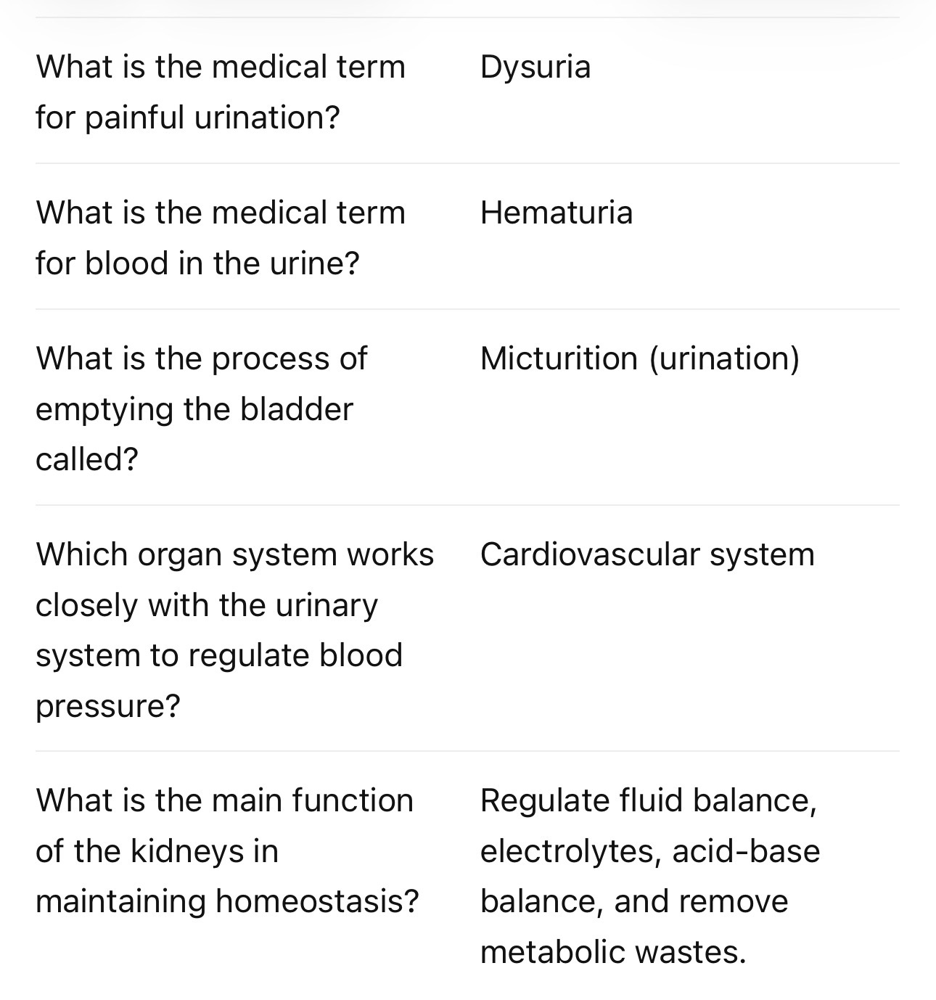
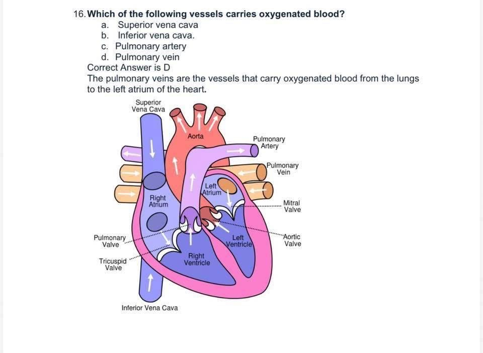
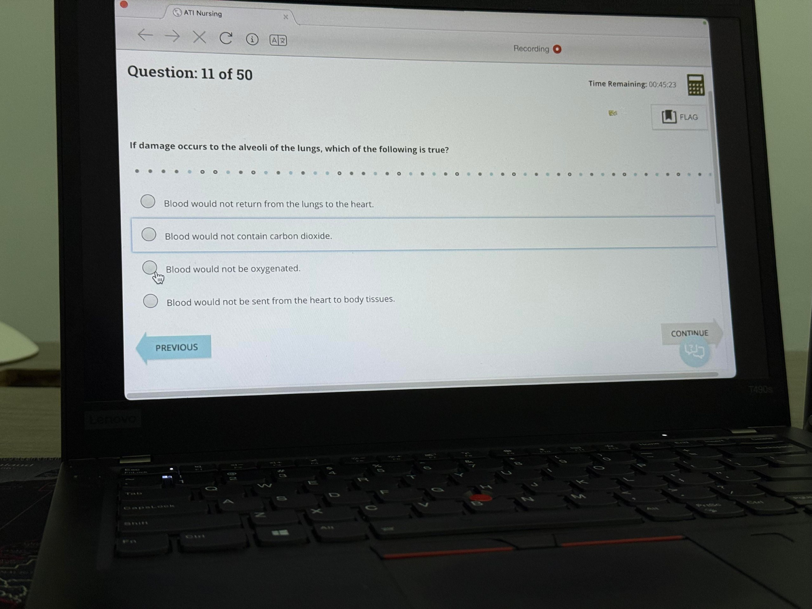

Preview our Active Recall Study Guides and answer real TEAS-style practice questions with instant feedback and detailed rationales.
Start Free DemoLearn how our study guides help students remember information faster.

Stop rereading notes. Train your brain to retrieve information exactly how you'll need it on the ATI TEAS.

Simple layouts designed to make complex concepts easy to understand.

Every page is designed specifically for ATI TEAS success.
Experience our interactive TEAS-style practice questions with instant feedback.
Unlock the complete Active Recall Study Guides, hundreds of TEAS-style practice questions, detailed rationales, and structured study plans.
Get Full Access